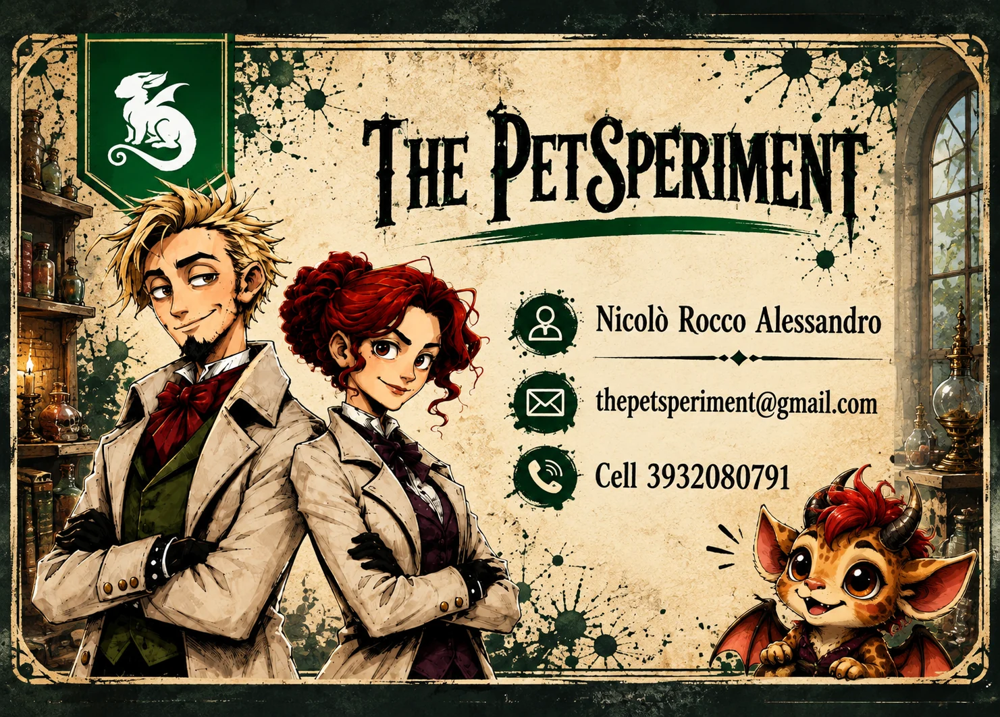

Microscopio, Elimina/Ruba Esperimento, Salta Turno, Salta Pesca, Scambia, Pesca Esperimento. Il Microscopio è la più versatile: 4 usi più la difesa.
Identità del gioco
Semplice da imparare. Difficile da mollare.
Sei uno scienziato: completa la tua sequenza di colori ed evoca la tua creatura prima degli altri. Ma la tua plancia è sotto gli occhi di tutti — e ognuno farà di tutto per fermarti. Si impara in un minuto, una partita vola in venti.
Per chi conosce il genere: un filler di carte take-that ad alta interazione, con moduli avanzati opzionali.
Ogni giocatore è uno scienziato che deve completare la propria sequenza ed evocare la sua creatura. La plancia è sempre visibile a tutti: tutti sanno quando stai per vincere e quindi quando colpirti.
Obiettivo
3 colori nella sequenza esatta + 1 Creatura.
Il primo giocatore che riempie tutti e 4 gli slot della propria plancia vince. La creatura scelta a inizio partita può rendere la vittoria automatica.
La plancia
Ogni plancia mostra una delle 6 permutazioni possibili di Rosso, Giallo e Blu, più lo slot Creatura.
Rosso
Giallo
Blu
Creatura
Quando peschi una Creatura con i 3 colori già piazzati:
Se è la Creatura obiettivo scelta a inizio partita, la vittoria è automatica.
Se è un'altra Creatura, vinci comunque ma può aprirsi la finestra di reazione con Ruba Creatura o Elimina Creatura.
Se è la Creatura obiettivo scelta a inizio partita, la vittoria è automatica.
Se è un'altra Creatura, vinci comunque ma può aprirsi la finestra di reazione con Ruba Creatura o Elimina Creatura.
Le 6 plance
Ogni giocatore ne usa una.
Ogni plancia mostra una delle sei sequenze possibili di colori più lo slot Creatura.
Preparazione e turno
Come si gioca un turno
Ogni giocatore prende una plancia, sceglie una Creatura obiettivo, i due mazzi vengono mescolati separatamente e ciascuno pesca 4 carte Azione. Inizia il giocatore con la faccia più da scienziato; in caso di parità, il più giovane.
Setup
Plancia + Creatura
La sequenza colori è visibile a tutti. La Creatura obiettivo è la scelta personale iniziale.
Fase 1
Pesca Esperimento
Se è il colore del prossimo slot, lo piazzi; altrimenti va negli scarti.
Fase 2
Pesca Azione
Aggiungi una carta alla mano. Massimo 7 carte a fine turno.
Fase 3
Gioca / Passa
Giochi una sola Azione oppure passi.
Componenti
Vuoi vedere quantità e composizione dei mazzi?
Vuoi i numeri esatti di ogni mazzo? Guarda il riepilogo.
Le carte
Le carte del gioco
Ogni carta è illustrata e riporta il proprio effetto. Le trovi tutte nella galleria qui sotto. Una sola carta Azione per turno, salvo le eccezioni previste dalle regole.
Ruba Creatura ed Elimina Creatura si giocano fuori turno quando un avversario sta per vincere. Contromano inverte le fasi del tuo turno. Rarissime: dopo l'uso escono dal gioco.
KAOS, BOOM, Vertigo
Restano nel mazzo Esperimenti ma non si piazzano: si attivano appena pescate e ribaltano la partita.
Finestra di reazione
Quando qualcuno sta per vincere, la partita può ancora cambiare.
Se la Creatura pescata non è quella obiettivo, i giocatori successivi in ordine di turno possono usare Ruba o Elimina Creatura. È possibile una catena di reazioni. Chi è bersaglio di Salta Turno non può reagire.
Carte reali del gioco
Tutte le carte del gioco.
Esperimenti, Creature, Azioni viola fuori turno e Azioni normali. Le carte Halloween non sono ancora incluse.
Retro dei mazzi
Carte Esperimento
Comprendono le grafiche Esperimento/Archivio fornite e le carte Evento del mazzo Esperimenti.
Creature
Azioni viola
Ce n’è 1 copia per ciascun tipo. Dopo essere state giocate, escono definitivamente dal gioco. Ruba Creatura ed Elimina Creatura si usano fuori turno; Contromano si gioca all’inizio del proprio turno.
Azioni normali
Scienziati
Moduli avanzati
Gioca con Scienziati e modalità Archivio.
Archivio e Scienziati possono essere aggiunti separatamente o insieme al gioco base.
Modalità Archivio
Le carte colore non utili possono essere conservate in 1 slot Archivio personale visibile a tutti per attivarne l'effetto stampato.
- Setup: 3 carte Azione invece di 4.
- Inserire una carta è gratis se l'Archivio è vuoto; costa 1 Microscopio se è occupato.
- Attivare l'effetto è gratis e non costa l'Azione del turno.
- Non si archiviano Creature, KAOS, BOOM, Vertigo.
- Ruba Esperimento può prendere dall'Archivio; Elimina Esperimento può distruggerne la carta.
- Scambia, BOOM e KAOS non toccano l'Archivio.
- Sotto KAOS puoi archiviare solo se la carta non serve a nessun avversario.
Modalità Scienziati
Ogni giocatore riceve 1 Scienziato casuale. Due giocatori non possono avere la stessa abilità.
- L'abilità si attiva quando hai esattamente i colori prerequisito indicati.
- Si disattiva se perdi quei colori.
- Le abilità che colpiscono un avversario possono essere annullate con 3 Microscopi quando segnate con ✋.
- Gli Scienziati disponibili sono 12.
Archivio — effetti
27 carte colore, 8 tipi di effetto.
Gli effetti sono distribuiti sulle 9 carte rosse, 9 gialle e 9 blu.
| Effetto | N. | Cosa fa |
|---|---|---|
| Standby | 6 | Se è l'Esperimento di cui necessiti, lo sposti dall'Archivio alla plancia invece di pescare. |
| Doppio | 6 | Questo turno: peschi 2 carte Azione oppure ne giochi 2, a tua scelta. |
| Recupero | 4 | Al posto della pesca, prendi l'ultima carta Esperimento dagli scarti. |
| Copia Archivio | 4 | Copi e usi l'effetto in Archivio di un avversario; entrambe le carte vanno negli scarti. |
| Microscopio | 3 | Vale come avere 1 Microscopio in mano. |
| Spia | 1 | Guardi la mano di un avversario. |
| Resurrezione | 1 | Peschi 1 Creatura dagli scarti. |
| Pesca 2 Esperimenti | 2 | Al posto della pesca, peschi 2 Esperimenti e li giochi una a una. |
| Effetto | Rosso | Giallo | Blu | Totale |
|---|---|---|---|---|
| Standby | 2 | 2 | 2 | 6 |
| Doppio | 2 | 2 | 2 | 6 |
| Recupero | 1 | 2 | 1 | 4 |
| Copia Archivio | 2 | 1 | 1 | 4 |
| Microscopio | 1 | 1 | 1 | 3 |
| Spia | 1 | 0 | 0 | 1 |
| Resurrezione | 0 | 0 | 1 | 1 |
| Pesca 2 Esperimenti | 0 | 1 | 1 | 2 |
| Totale | 9 | 9 | 9 | 27 |
Scienziati
12 Scienziati, 12 abilità.
Modulo avanzato. Ogni giocatore riceve 1 Scienziato casuale. L'abilità si attiva quando hai sulla plancia i colori indicati dai cerchi sulla carta, e si disattiva se li perdi. Le carte complete, con requisito e testo, sono nella galleria qui sopra.
Come si attivano: nessun cerchio = sempre attiva · 1 cerchio = serve quel colore piazzato · 2 o 3 cerchi = servono tutti quei colori. Le abilità che colpiscono un avversario possono essere annullate dal bersaglio con 3 Microscopi.
IN SVILUPPO
Futura espansione Halloween
Espansione futura attualmente in sviluppo.
- Le plance usano il retro Halloween, con la sequenza modificata da una carta colore doppia. La seconda copia non segue l'ordine e si piazza appena pescata; Ruba Esperimento può colpirla liberamente.
- Si usano solo le 7 Creature Halloween, che sostituiscono le normali.
- I Microscopi diventano 12 normali + 6 Oscuri. 1 Oscuro vale come 2 normali. Difesa standard: 3 normali oppure 1 normale + 1 Oscuro.
- Dolcetto/Scherzetto colpisce tutti insieme e gira la plancia sul retro Halloween. Chi ha 1 Microscopio Oscuro può giocarlo per non girare la propria plancia; la difesa possibile è solo con 1 normale + 1 Oscuro. Le carte già piazzate e quelle in Archivio restano.
- Ci sono 6 Scienziati Halloween. Come i base, l'abilità si attiva quando hai sulla plancia i colori indicati dai cerchi (nessun cerchio = sempre attiva).
| Scienziato | Requisito | Abilità |
|---|---|---|
| SALLY | Sempre | Immune a Dolcetto/Scherzetto: la tua plancia non si gira mai. |
| JACK | Sempre | Se hai meno carte Esperimento degli avversari, peschi 1 Esperimento aggiuntivo a fine turno (dopo la fase azione). |
| FRANK | Sempre | Puoi giocare un turno aggiuntivo usando Pesca Esperimento + 1 Microscopio Oscuro. |
| DRAKE | Rosso | Quando giochi Scambia, invece della plancia puoi scambiare 3 carte a caso della tua mano con 3 a caso di quella di un avversario. |
| LORENZ | Giallo + Blu | Gioca 1 Microscopio Oscuro: guardi la mano di un avversario e rubi 1 carta Azione. |
| CATRY | Rosso + Giallo + Blu | Usa 1 Microscopio Oscuro prima della pesca per attivare una protezione da Ruba Creatura ed Elimina Creatura per quel turno. |

Evento
Ci vediamo al TO Play!
The PetSperiment sarà al TO Play — Salone del Gioco di Torino, il 19 e 20 settembre 2026. Vieni a provare il prototipo dal vivo: ogni feedback è prezioso e benvenuto, aiuta a rendere il gioco migliore.
19–20 settembre 2026
Prova il gioco, parlami delle tue impressioni e lasciami un feedback: è il modo migliore per far crescere The PetSperiment.
The PetSperiment
Gioca online o segui il progetto.
Il gioco è di Nicolò Rocco Alessandro. La versione digitale è giocabile online. La strategia prevista per Gamefound è il lancio della base, con Archivio, Scienziati e Halloween come stretch goal.
Autore: Nicolò Rocco Alessandro
thepetsperiment@gmail.com